Your June oven, on your Home Assistant dashboard, working locally. This walkthrough covers every screen of the card: starting a cook, watching it, the camera, several ovens, and the settings.
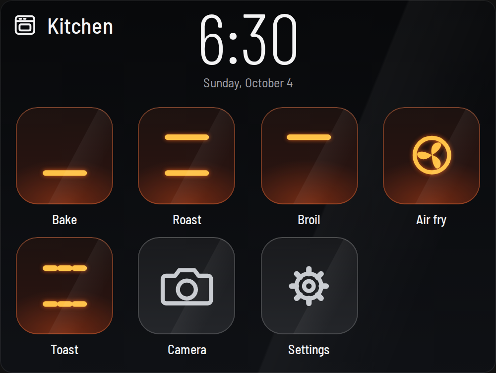
The card ships inside the June Oven integration. Once the integration is installed, the card is already loaded on every dashboard.
prj-july/ha-june-oven as an Integration, open June Oven and select Download.Prefer YAML? One line is enough; everything else has a sensible default and can be changed later in the card's own Settings.
type: custom:july-oven-card entity: climate.kitchen_oven icon: kitchen # optional
The card shows the oven's own home screen: a clock and the cook modes, laid out like the tiles on the oven's touchscreen.
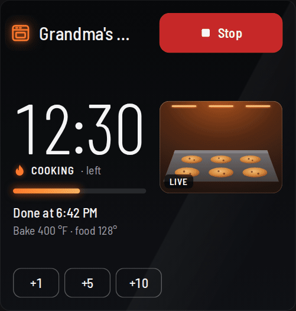
Other June modes (Reheat, Proof, Dehydrate, Slow cook, Keep warm and more) still show by name when you start them on the oven or in the June app. Starting them from the card comes once their commands have been recorded.
Prefer your favourites up front? Set Cook modes to Most used first in Settings and the tiles reorder by how often you start each mode from this card. Mode layout sets how many columns and rows of tiles you get.
Nothing heats on one tap. Every mode opens a review first, and the oven only starts when you press Start preheating.
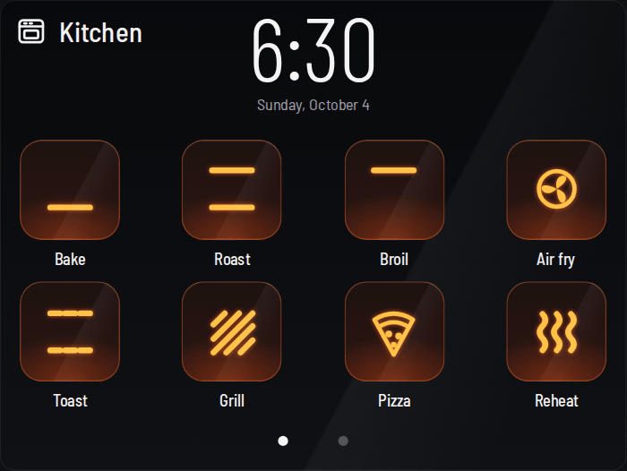
Everything stays in the same place from preheat to done, so you can read the card from across the kitchen.
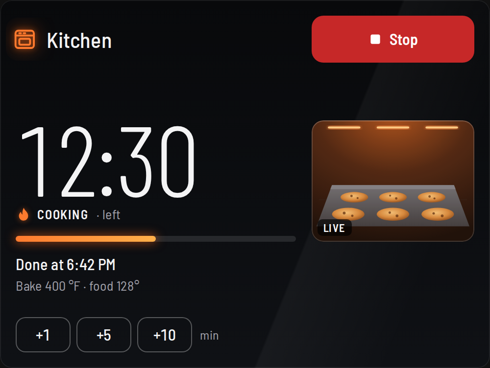
1 2 3 4 5 6 7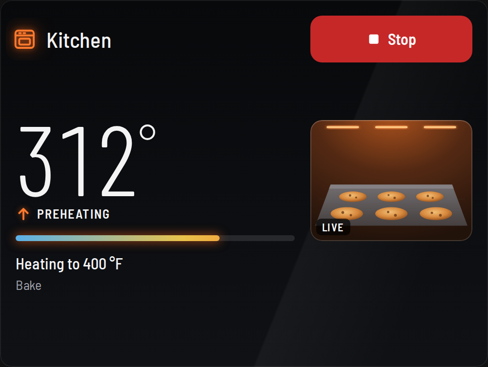
Tap the picture on the card, or the Camera tile on the home screen, and a larger camera window opens over the card. × or Escape closes it.
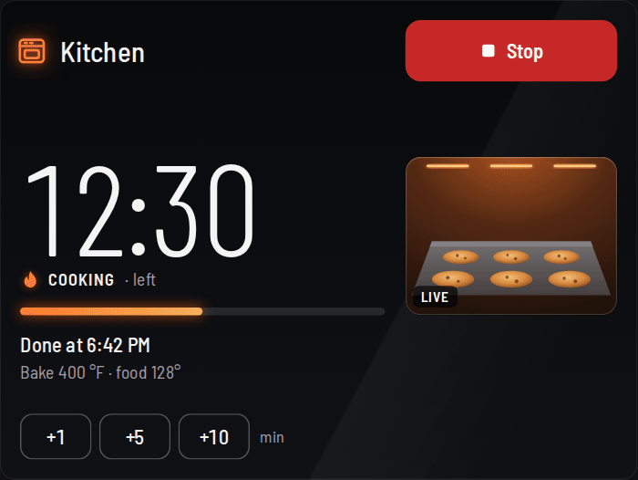
June's camera isn't a video stream. While it heats, the oven sends a still picture about once a second, and the card shows the newest one.
The window checks for new pictures at the camera frame rate you pick in Settings: 1, 5, 10 or 15 per second. 15 is the default, so a new picture shows the moment it arrives. 1 fps matches the stock June app and loads the fewest pictures from Home Assistant.
The small picture on the card refreshes at most once a second.
Add more ovens to the same card. The oven that's heating gets the full card, other heating ovens get a row with their own Stop, and ovens that are off share one row of small buttons.
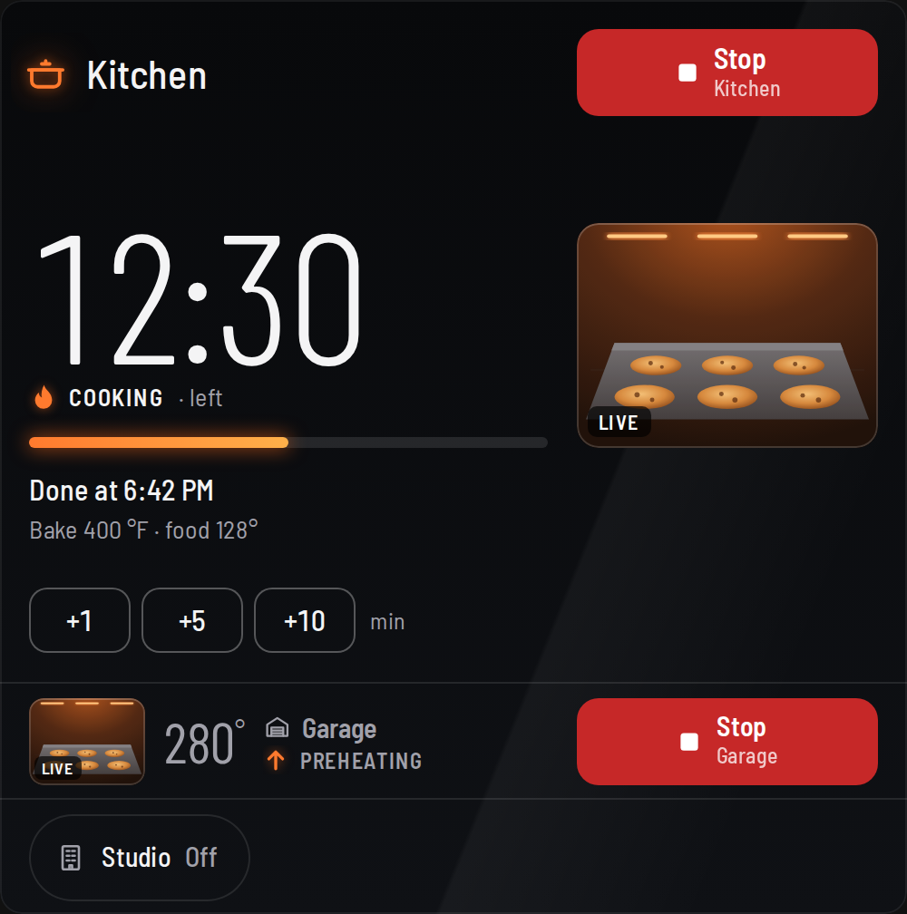
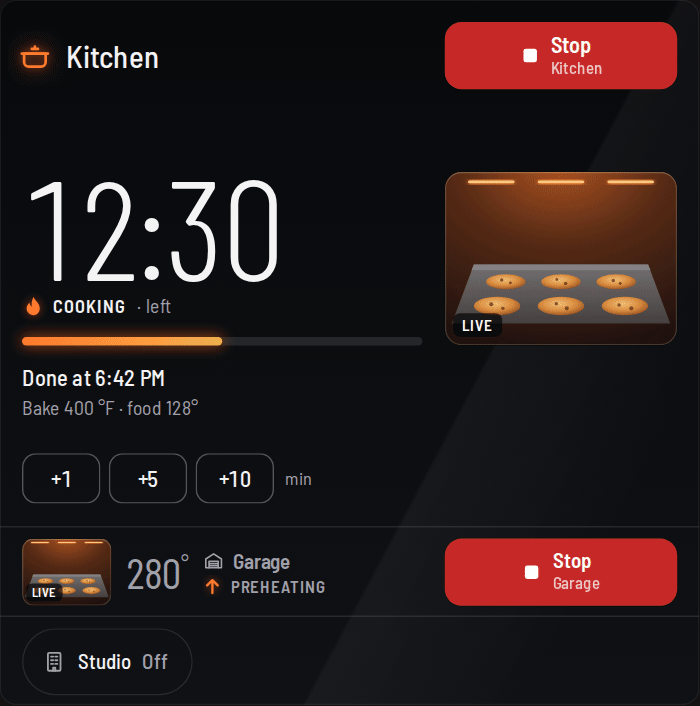
type: custom:july-oven-card entity: climate.kitchen_oven icon: kitchen entities: - entity: climate.garage_oven icon: garage - entity: climate.studio_oven icon: mdi:home-city name: Studio
The Settings tile opens the card's own settings: the look, the camera, the name, the layout of the mode tiles, the card's size and each oven's icon. Choices are saved in this browser, so a wall tablet and your phone can each look the way you like. Your YAML is the starting point, and Reset goes back to it.
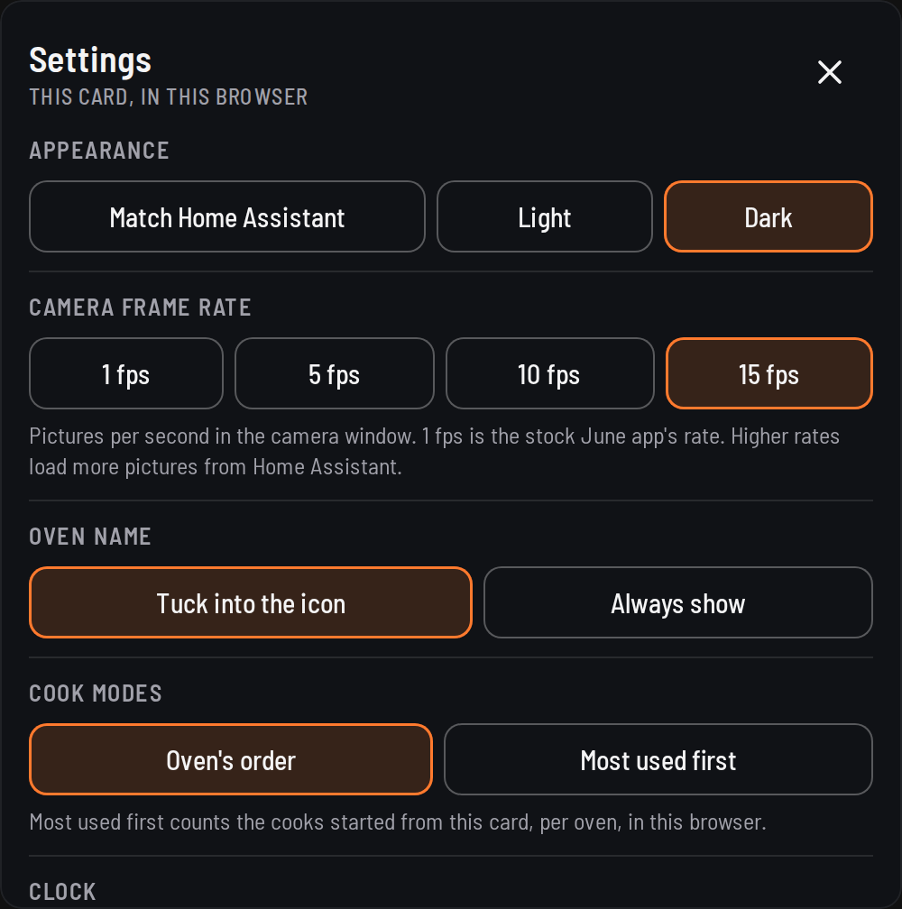
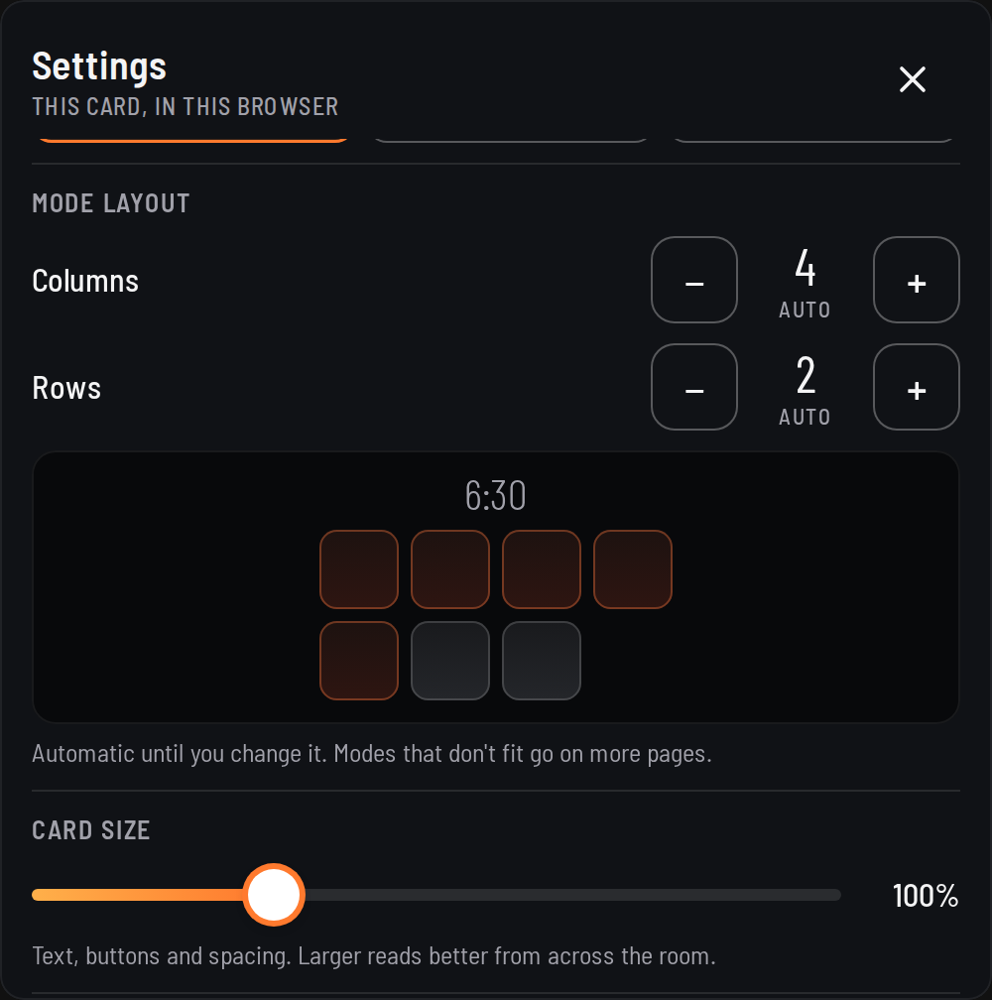
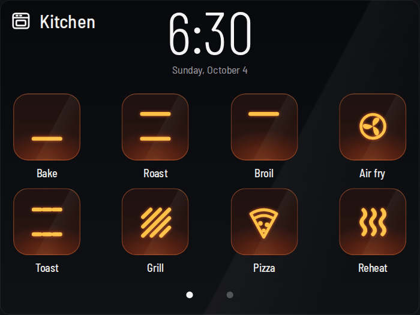
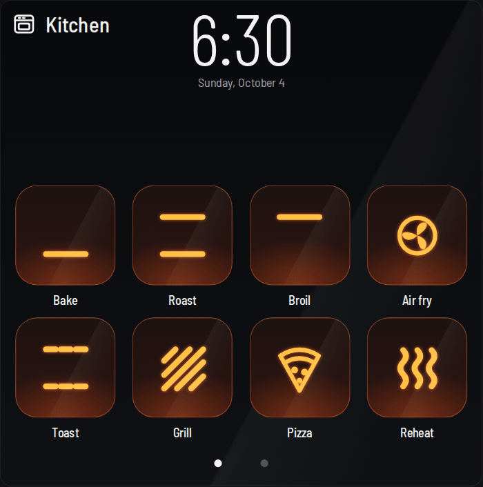
mdi: icon; the card changes as you tap. The version is at the bottom.| Setting | Choices | YAML key |
|---|---|---|
| Appearance | Dark (the default, the oven's own glass), Light, or Match Home Assistant | theme |
| Camera frame rate | 1, 5, 10 or 15 fps (default 15; 1 is the stock June app) | camera_fps |
| Oven name | Tuck into the icon after 5 s, or always show | hide_name |
| Cook modes | The oven's order, or most used first (counted per oven, in this browser) | mode_order |
| Mode layout | Columns 1–7 and rows 1–3, or automatic | columns, rows |
| Card size | 80–150%: text, buttons and spacing | scale |
| Mode icon size | Small, Medium, Large (default) or Fill | icon_size |
| Clock | Automatic, 12-hour or 24-hour | clock |
| Oven icons | 12 built-in icons or any mdi: icon, per oven | icon |
| Oven in Home Assistant | Opens the oven's device page | none |
On a sections dashboard the card picks its layout from its size: standard is 12 × 6, wall tablet is full width × 8, compact is 12 × 1, and each extra oven adds a row. In a panel view the card fills the window. Set display_mode to choose one yourself.
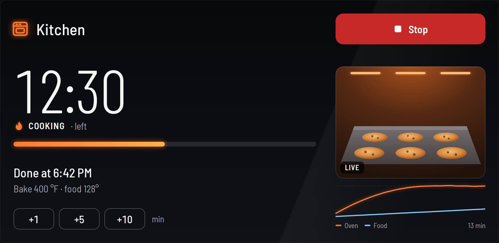
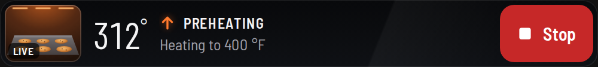
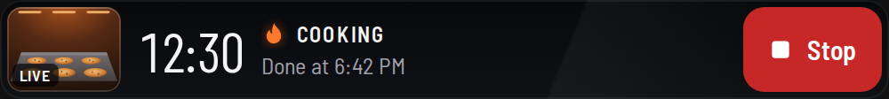
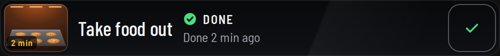
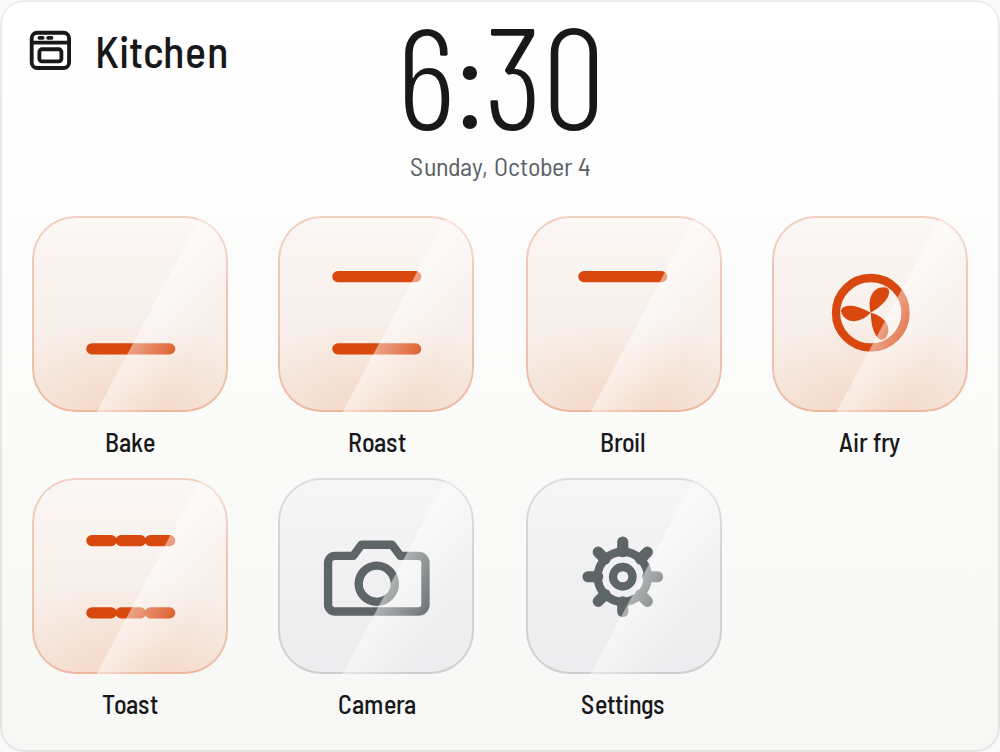
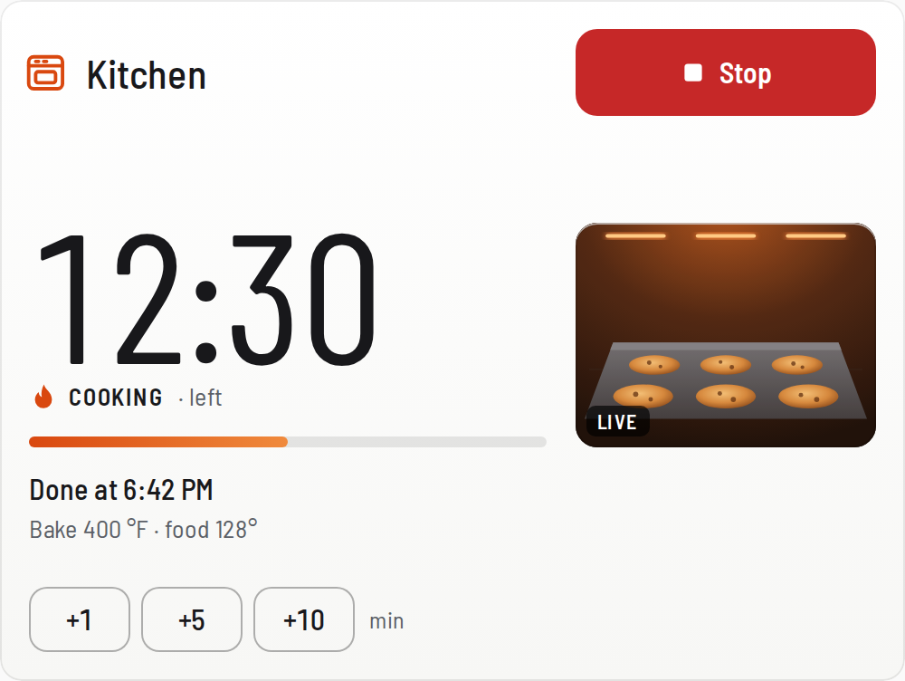
Open the card's Settings and check the version at the bottom. If it isn't the latest, select Redownload in HACS, restart Home Assistant and hard-refresh the browser tab (Ctrl+Shift+R, or Cmd+Shift+R on a Mac).
Also check Settings › Dashboards › Resources for a /local/july-oven-card.js entry left over from a manual copy, and remove it. The integration loads the card for you.
That's the loading panel. It appears only if Home Assistant takes longer than a third of a second to finish loading the dashboard after a refresh, and the card replaces it as soon as it's ready.
When the oven refuses, the card says why in plain words:
The oven only sends pictures while it heats, unless it runs the Project July local server, which can wake the camera when you open the window. Start a cook and pictures appear within a second or two. If the oven is heating and the window says Waiting for a picture, the oven hasn't sent one yet.
Home Assistant hasn't heard from the oven for a while. The card keeps the last reading and says how long ago it was seen. Check that the oven is on your network and that the oven's address in the integration's options is still right.